k1 is a valid kernel, but k2 is not a valid kernel.
k2 is a valid kernel, but k1 is not a valid kernel.
Neither k1 nor k2 is a valid kernel.
Q3MSQ3 marksselect all that apply
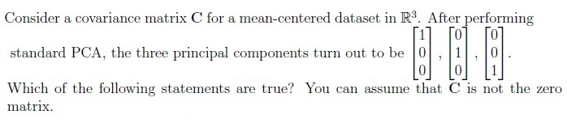
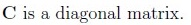
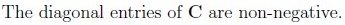
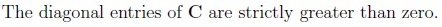
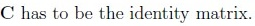
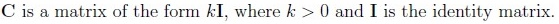
Q4SA3 marks
Kernel PCA with a polynomial kernel of degree 3 is run on a dataset of 100 data-points. Let ϕ be the transformation corresponding to this kernel. If the largest eigenvalue of the centered kernel matrix is 10, find the largest eigenvalue of the covariance matrix of the transformed dataset, where ϕ is used to effect the transformation.
Q5SA3 marks
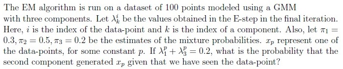
Q6SA4 marks
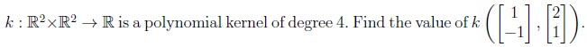
Q7SA4 marks
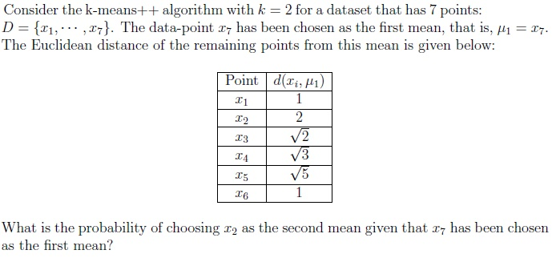
Comprehension passage - the questions below it refer to this
Based on the above data, answer the given subquestions.
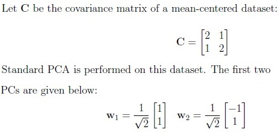
Q8SA2 marks
Find the variance of the dataset along the first principal component.
Q9SA1 mark
Find the variance of the dataset along the x-axis.
Q10MCQ2 marks
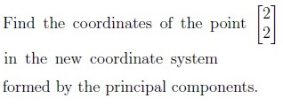
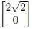
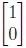
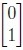
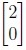
Comprehension passage - the questions below it refer to this
Based on the above data, answer the given subquestions.
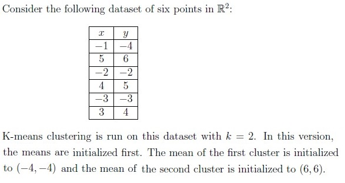
Q11SA2 marks
If (x1, y1) is the mean of the first cluster after convergence, find the value of x1 + y1.
Q12SA2 marks
If (x2, y2) is the mean of the second cluster after convergence, find the value of x2 + y2.
Comprehension passage - the questions below it refer to this
In the context of Bayesian estimation, consider a Beta prior for the parameter p of a Bernoulli distribution:
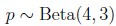
In the context of Bayesian estimation, consider a Beta prior for the parameter p of a Bernoulli distribution: The dataset has 8 ones and 5 zeros. Based on the above data, answer the given subquestions.